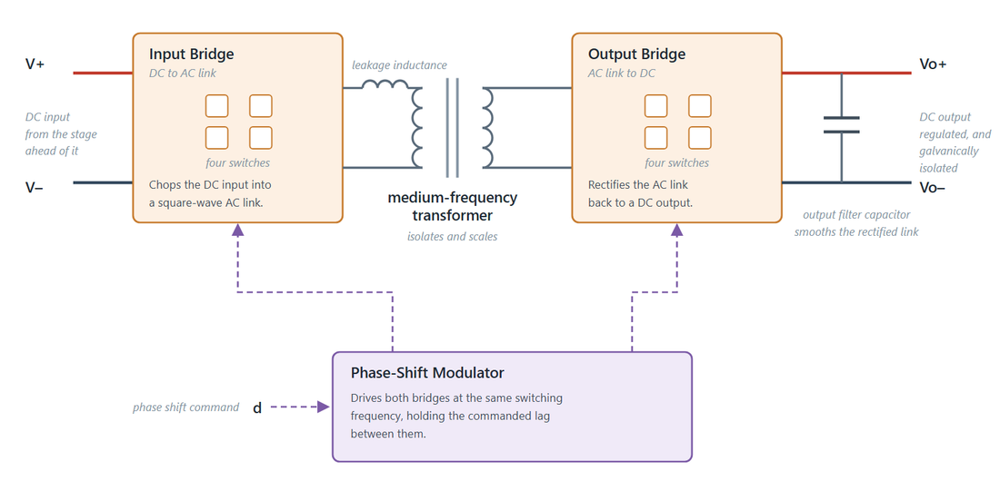

DAB Generalized Average Model
Contents

Continuous-time generalized average model of a Dual Active Bridge (DAB) isolated DC-DC converter with phase-shift modulation. The model tracks Fourier coefficients of the converter states rather than the switching waveforms, so it reproduces the large-signal DC behaviour and the dominant dynamics without resolving the switching period.
The component has an input port d, two input electrical ports V+ and V-, and two output electrical ports Vo+ and Vo-. The control input d is the phase shift ratio. A positive d transfers power from the input port to the output port.
As the figure shows, the two bridges switch at the same frequency and the only control handle is the lag between them. The leakage inductance of the transformer is the energy transfer element rather than a parasitic: current builds in it while the two bridge voltages disagree, and that current is what carries power across the isolation barrier.
State variables are the 0th Fourier coefficient of the output capacitor voltage and the real and imaginary parts of the 1st Fourier coefficient of the transformer current. Selecting Include capacitor ESR extends the model from 3rd to 6th order by adding the 0th harmonic of the transformer current and the 1st harmonic of the capacitor voltage.
Transformer
- Transformer turns ratio (-), N, specified as a scalar value. Default is 1.
- Primary leakage inductance (H), L1, specified as a scalar value. Default is 68.2e-6.
- Secondary leakage inductance (H), L2, specified as a scalar value. Default is 68.2e-6.
- Equivalent winding + switch resistance (referred to secondary) (Ohm), Rt, specified as a scalar value. Default is 0.5.
The two leakage inductances enter the equations only through the single equivalent inductance
Lt = L1 / N^2 + L2
referred to the secondary side. If the datasheet or design gives a single total leakage inductance referred to the primary, put it in L1 and set L2 to zero, or refer it to the secondary and put it in L2. Splitting the same physical inductance across both parameters double-counts it.
Output
- Output capacitance (F), Co, specified as a scalar value. Default is 540e-6.
- Switching frequency (Hz), fs, specified as a scalar value. Default is 10000.
Co sets the output pole together with the load, and fs appears in the harmonic terms through the angular switching frequency ws = 2*pi*fs. Because the model is an averaged one, increasing fs does not increase the required solver step.
Initial Conditions
- Initial output voltage (V), vo0_init, specified as a scalar value. Default is 0.
- Initial transformer current (real) (A), it1R_init, specified as a scalar value. Default is 0.
- Initial transformer current (imaginary) (A), it1I_init, specified as a scalar value. Default is 0.
These three values set the starting point of the internal states vo0, it1R, and it1I. All three are declared with priority None, so they seed the solve without being asserted as initial-condition targets. Set vo0_init to the intended output bus voltage when the converter feeds a precharged bus, otherwise the output ramps up from zero at the start of the simulation.
ESR
- Include capacitor ESR (-), include_esr, specified as a logical value. Default is false.
- Capacitor ESR (Ohm), Rc, specified as a scalar value. Default is 0.25.
Leave Include capacitor ESR cleared for the 3rd-order model. Select it for the 6th-order model, in which the output voltage picks up a resistive term proportional to the rectified current and three additional states are integrated. The 6th-order form is more accurate near the switching frequency but is stiffer and slower to solve.
Equations
With the ESR option cleared, the component solves
Co * d(vo0)/dt == i_rect + i_out Lt * d(it1R)/dt == 2*sin(pi*d)/pi * vo0 - Rt*it1R + ws*Lt*it1I Lt * d(it1I)/dt == 2*cos(pi*d)/pi * vo0 - ws*Lt*it1R - Rt*it1I + 2/pi * v_in/N v_out == vo0 i_in * v_in == -i_out * v_out
where i_rect = 4/pi * (sin(pi*d)*it1R + cos(pi*d)*it1I) is the rectified current into the output capacitor. The last equation enforces power balance across an ideal transformer, so all conduction loss is represented by Rt.
References
L. Qin and J. W. Kimball, "Generalized Average Modeling of Dual Active Bridge DC-DC Converter," IEEE Transactions on Power Electronics, vol. 27, no. 4, pp. 2078-2084, April 2012. The 3rd-order model corresponds to Eq. (27) and the 6th-order model with ESR to Eq. (37) and Eq. (38) of that paper.